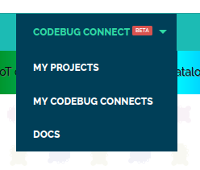
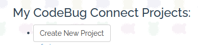
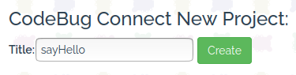
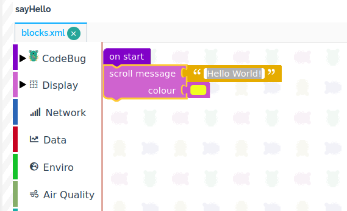
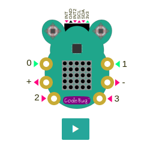
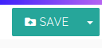
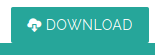

Quickstart¶
Can’t wait to get started with your new CodeBug Connect? This guide will help you get the most out of it.
Introduction¶
You can create programs by dragging and dropping blocks on the CodeBug website, or writing text based Python. Once you’ve completed your program, you need to transfer it onto your CodeBug Connect. Do this in one of three ways:
Use CodeBug Connect as a USB disk drive and transfer files using your computer’s file manager.
Connect directly to CodeBug Connect from your web browser and edit files directly or transfer files via drag and drop into your browser.
Schedule a remote transfer from the CodeBug Website. Next time your CodeBug Connect checks in it will fetch the new program. (To do this your CodeBug Connect requires Internet access and you must have ‘adopted it’ into your account.)
Creating your first program¶
Visit CodeBug Connect Editor and login or create a new account.
From the main menu choose
CODEBUG CONNECT→MY PROJECTSClick
Create New ProjectGive your new project a suitable name and click
CreateEdit the
scroll messagefield to your chosen message and choose your favourite colour.Click the play button to see your program run on the simulator.
Click
SAVE
Transferring your program to a physical CodeBug Connect¶
Once you have created your first program and checked it works in the simulator you need to transfer it to your physical CodeBug Connect. This guides uses USB disk mode, which doesn’t require using the WiFi. For other ways to transfer, or if your device cannot connect with USB (e.g. iPads, some smartphones etc.) see connection_modes.
Click
DOWNLOADand save the file to your computer.Disconnect CodeBug Connect from all power sources.
Press and hold the centre of Joystick A in while plugging CodeBug Connect into your computer’s USB port. Keep it held until USB scrolls across in yellow. CodeBug Connect will show a yellow file icon when ready.
Note
Some computers, particularly Apple Macs, may take a few seconds to recognise CodeBug Connect as a disk.
Transfer the file you have downloaded to replace the
boot.pyfile on your CodeBug Connect.Warning
You must make sure your program is transferred onto your CodeBug as
boot.pyand exactly that.boot-1.pyor anything else will not be run. Be aware that some web browsers rename downloaded files, in which case you need to rename it back.Note
CodeBug Connect will always start by running the
boot.pyfile. See boot for more information.Eject (or for some operating systems unmount) the CodeBug Connect USB disk before unplugging. On most computers (not some Apple Macs) the yellow file icon on CodeBug Connect will turn green indicating it’s safe to unplug.
Replug your CodeBug and it should begin running your program.
Great, you’ve created and transferred your first program over USB disk mode.
USB disk mode is great when you don’t want to connect over WiFi. Typically you’ll use USB mode to grab a data file CodeBug has collected, or when you want to transfer a finished program or make a quick change to a configuration.
When you’re creating a new program you’ll typically make lots of changes and want to instantly see the result or any errors produced. For this, we recommend you use CodeBug Connect with WiFi. Follow the Setting Up WiFi guide.